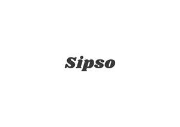

Trade Mark Journal No.2025/013 28 March 2025
UK00004159303 12 February 2025 (6,21,30,32,33,35,43)

- Class 6
- Cans of metal for alcoholic beverages.
- Class 21
- Stirrers (Drink -); Drinking bottles; Pilsner drinking glasses; Drinking glasses; Drinking bottles for sports.
- Class 30
- Coffee drinks; Chocolate with alcohol; Beverages (Tea-based -).
- Class 32
- Non-alcoholic drinks; Non-alcoholic malt drinks; Carbonated non-alcoholic drinks; Sarsaparilla [non-alcoholic beverage]; Non-alcoholic fruit drinks; Non-alcoholic beer flavored beverages; Non-alcoholic beer; Non-alcoholic beverages; Beverages (Non-alcoholic -); Non-alcoholic malt beverages; Isotonic non-alcoholic drinks; Non-alcoholic carbonated beverages; Non-alcoholic beverages flavoured with coffee; Non-alcoholic soda beverages flavoured with tea; Non-alcoholic beverages flavored with coffee; Kvass [non-alcoholic beverage]; Kvass [non-alcoholic beverages]; Cordials (non-alcoholic beverages); Non-alcoholic wine; Non-alcoholic beverages flavored with tea; Non-alcoholic beverages flavoured with tea; Non-alcoholic vegetable juice drinks; Fruit beverages (non-alcoholic); Cola drinks; Root beers, non-alcoholic beverages; Non-alcoholic beverages with tea flavor; Non-alcoholic flavored carbonated beverages; Cocktails, non-alcoholic; Non-alcoholic cocktails; Non-alcoholic fruit vinegar beverages; Non-alcoholic grape juice beverages; Non-alcoholic beers; Fruit juice beverages (Non-alcoholic -); Non-alcoholic fruit juice beverages; Honey-based beverages (Non-alcoholic -); Non-alcoholic honey-based beverages; Non-alcoholic sparkling fruit juice drinks; Non-alcoholic fruit cocktails; Non alcoholic aperitifs; Alcohol free beverages; Non-alcoholic beer-based cocktails; Cider, non-alcoholic; Non-alcoholic malt free beverages [other than for medical use]; Smoothies [non-alcoholic fruit beverages]; Aloe vera drinks, non-alcoholic; Cordials [non-alcoholic]; Non-alcoholic cordials; Vitamin fortified non-alcoholic beverages; Juice drinks; Non-alcoholic dried fruit beverages; Low alcohol beer; Beer-based beverages; Non-alcoholic wines; Aperitifs, non-alcoholic; Fruit flavoured carbonated drinks; Fruit drinks; Alcohol free wine; Squashes [non-alcoholic beverages]; Fruit flavored drinks; Non-alcoholic bitters; Fruit-based soft drinks flavored with tea; Isotonic drinks; Extracts for making non-alcoholic beverages; Alcohol free cider; Non-alcoholic beverages containing fruit juices.
- Class 33
- Rum [alcoholic beverage]; Alcoholic cocktails; Alcoholic fruit cocktail drinks; Alcoholic tea-based beverage; Alcoholic coffee-based beverage; Alcoholic energy drinks; Cordials [alcoholic beverages]; Alcoholic beverages, except beer; Alcoholic beverages (except beer); Beverages (Alcoholic -), except beer; Pre-mixed alcoholic beverages; Alcoholic seltzers; Low alcoholic drinks; Alcoholic carbonated beverages, except beer; Alcoholic beverages of fruit; Alcoholic fruit beverages; Pre-mixed alcoholic beverages, other than beer-based; Sugarcane-based alcoholic beverages; Alcoholic beverages except beers; Alcoholic beverages (except beers); Alcoholic beverages [except beers]; Alcoholic aperitifs; Alcoholic cordials; Alcoholic wines; Grain-based distilled alcoholic beverages; Prepared alcoholic cocktails; Alcoholic bitters; Alcoholic cocktails containing milk; Baijiu [Chinese distilled alcoholic beverage]; Alcoholic aperitif bitters; Aperitifs with a distilled alcoholic liquor base; Flavoured brewed alcoholic malt beverages, except beers; Flavored brewed alcoholic malt beverages, except beers; Nira [sugarcane-based alcoholic beverage]; Alcoholic cocktail mixes; Fruit (Alcoholic beverages containing -); Alcoholic beverages containing fruit; Wine-based drinks; Alcoholic cocktails in the form of chilled gelatins; Alcoholic extracts; Rum-based beverages; Alcoholic punches; Wine-based beverages; Wine coolers [drinks]; Alcoholic essences; Alcoholic jellies; Alcoholic fruit extracts; Fruit extracts, alcoholic; Preparations for making alcoholic beverages; Alcoholic preparations for making beverages; Spirits [beverages]; Distilled beverages; Beverages (Distilled -).
- Class 35
- Retail services in relation to alcoholic beverages (except beer); Wholesale services in relation to alcoholic beverages (except beer).
- Class 43
- Serving of alcoholic beverages; Food and drink catering; Catering of food and drink; Catering (Food and drink -).
Madelaine Fullard